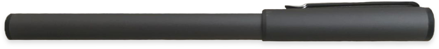

HI-ONE的故事
我们想告诉你的事
一直以来，我们都在思考和探索。为学生，为教育我们能做什么，如何提高教学的便捷度。我们应该为学生做一款好的教学产品。2017年1月我们开始构思，在这个最早的想象中它是具有的人格的。它应是美观的，便捷的，体现嗨课堂长久以来的教育理念的。2017年3月它胚胎初成，经过数十次的调整和修改，同年11月Hi-ONE手写宝的最终形态终于产生。它有着合适的尺寸，它的重量很轻，每一个动作的变化都是轻松的,精心处理过的细节体现匠心。一切准备就绪,Hi-one期待着与你见面。
人性化智能笔
这款智能笔使用了金属材质，磨砂质感的肌理方便学生在使用时易握不滑落，它颜色为星光灰，有一点浅浅的光泽。它非常的智能，在笔的尾端有一个指示灯，分别有绿、蓝、紫三种状态。当绿灯闪烁时它正在充电，当绿灯常亮时它已经充满电啦。当蓝灯常亮时正是你在使用它书写时，当紫灯常亮时它已经低电了。笔芯平常也可以书写，连上wifi它就变成了智能笔。
HI-ONE使用方法
HI-ONE与 “匠心”
以诚心赋予价值
”轻盈一下“机身
纳米机身，材料轻便，它的厚度仅有9mm,减去一切多余重量，尺寸为168.25x251.25mm，无论你是单手拿还是双手拿都非常舒适贴合人体工学，重量仅250g和一本笔记本差不多。
“灵捷”手写笔
它反应灵敏便捷，连上蓝牙后本子上书写的内容可直接反应到电脑上，即刻同步课堂，便于老师和学生教学沟通，可写即时笔记，屏幕同步显示绘制记录，可选择笔粗细以及颜色，也可查看绘制过程，极大提高了教学质量。
嗨课堂教育宗旨
嗨课堂从事教育多年，一直致力于学生教育，手写宝选用公司主体色—橙红色，突出了朝气蓬勃有活力。嗨课堂的成立是为了让学生足不出户遇见天下 。 真做教育，做真教育。成为学生最喜欢，家长最信任，教师最向往的教育平台，同时让学习变得简单和快乐。
外置蓝牙连接器
手写宝与PC直连，无论是笔记记录or微课视频都可以直接存在PC端，相当方便。 注：请务必使用本店专用蓝牙适配器与手写宝连接，否则可能造成连接不上，适配不好的情况。 具体连接方法： 1.将蓝牙插入电脑USB接口 2.打开嗨课堂客户端连接手写宝
让学习变得简单和快乐